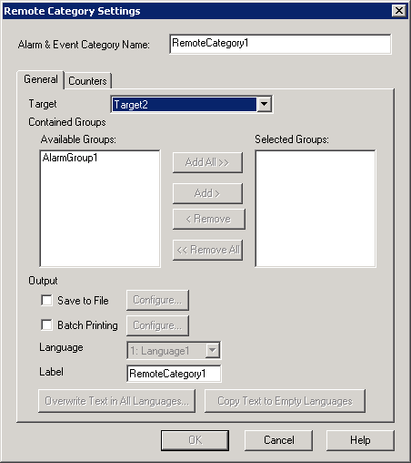

|
|
|
|
|
|
|
|
To create remote categories, you must first:
Enable Data Sharing on the targets. For more information on enabling Data Sharing, see Section 4.5.1.5, Remote Access: Data Sharing.
Enable sharing on the alarm or event group. For more information on enabling Alarm/Event Groups sharing, see Section 16.2.4.1, Alarm Group Settings: Sharing.
To create a remote category:
Right-click the Alarms & Events Node and select New Remote Category to display the Remote Category Settings dialog box.
In the Remote Category Settings dialog box, define the following remote category settings.

Alarm & Event Category Name
|
Alarm & Event Category Name |
The remote category's name. Follow the naming conventions when creating a remote category name. For more information on naming conventions, see Appendix 9, Naming Conventions. |
General Tab
|
Target |
This drop-down list provides a list of targets that have shared alarm/event groups. Select at target and its shared alarm/event groups display in the Available Groups area. |
|
Available Groups |
Lists all the selected target's shared alarm groups and event groups that you can add to the remote category. Add a group by selecting a group from the list and clicking the Add button. |
|
Selected Groups |
Lists the groups in the remote category. Remove a group by selecting the group and clicking the Remove button. |
|
Save to File |
To output the alarms and events in the remote category to a .csv file, select the Save to File check box and click the Configure button to specify the save properties. When you output alarms and events to the Secondary or Optional Drive in a .csv file format, select the check box and click Settings. For more information, see Section 16.3.6, Outputting Alarms and Events to a .csv File. |
|
Batch Printing |
To print the alarms and events, select the Batch Printing check box and click the Configure button to set the print properties. |
|
Language |
Available when multiple languages are set up in the Language node. Select the Label's language. You can set up a different label for each user language. For more information, see Section 20.2, Switching Languages. |
|
Label |
Defines the group's name that displays in the summary's group column. You can define a different label for each of the available languages. You can enter up to 32 characters for each group name. |
|
Overwrite Text in All Languages |
Available when multiple languages are set up in the Language node. Overwrites the text in all languages with the text defined in the Label. For more information, see Section 20.2, Switching Languages. |
|
Copy Text to Empty Languages |
Available when multiple languages are set up in the Language node. Copies the text defined in the Label to languages that do not have labels yet. For more information, see Section 20.2, Switching Languages. |
Counters Tab
Remote category counters are the same as the Alarm & Event Category counters. Alarm & Event Category counters are described in Section 16.3.1.2, Displaying Multiple Groups: Counters Tab.